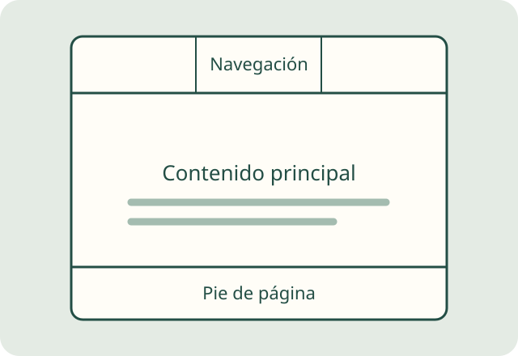

01 / Estructura
Antes del color, el contenido
El HTML organiza lo que cuenta una página. Un título presenta la idea principal; los párrafos la desarrollan y las imágenes ayudan a explicarla.
Etiquetas como <nav>, <main> y <footer> permiten reconocer la navegación, el contenido y el cierre del sitio. Una estructura clara facilita leerlo y mantenerlo.
Una idea para practicar
Escribe primero el contenido sin estilos. Comprueba que los títulos sigan un orden y que cada enlace describa su destino.
